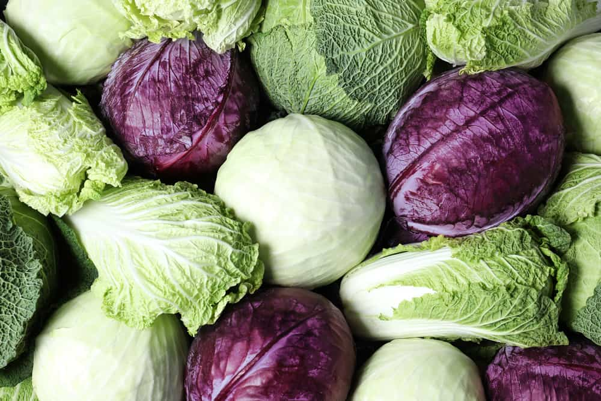

Welcome to the Cabbage C(k)itchen  Below are some common recipes that utilize cabbage in their creation.
1. Coleslaw Ingredients 4 cups of thinly sliced cabbage. 1 grated carrot 2 sliced onions 4 tablespoons of mayonnaise 1 teaspoon of yellow mustard 2 teaspoons of cider vinegar 1/8 teaspoon ground black pepper salt Steps 1. Add the cabbage, carrots, and onions into a large bowl. 2. Add dressing ingredients and mix together. 3. Add pepper and desired amount of salt.
2. Sauteed Cabbage Ingredients 1 head of cabbage Olive oil Butter Salt Pepper Cider Vinegar Steps 1. Start by cutting the cabbage in half, then cut thin slices around the core. Discard the core when finished. 2. Add the butter and olive oil into a large frying pan. 3. When the butter has melted, add the cabbage. 4. Wait for the cabbage to turn golden brown, while stirring occasionally. 5. Remove the cabbage from the pan, then add the desired amount of spices, then serve.
3. Okonomiyaki Ingredients Shredded Cabbage Scallions Almond Flour 1 egg Soy Sauce Black Pepper Minced Garlic Coconut/Avocado oil Steps 1. Mix the cabbage, scallions, and almond flour in a large bowl. 2. In another bowl, mix the egg, soy sauce, black pepper, and garlic. 3. Combine the two bowls, and mix well. 4. Heat a large frying pan on medium-high heat for 3 minutes, coat the pan with 1 tablespoon of oil. 5. Scoop 4 tablespoons of mixture per pancake unto the pan and flatten it with a spatula. 6. Let the pancakes cook for 3 minutes, then flip them and let cook for another 3 minutes. 7. Remove the pancakes from the pan and serve.
4. Pizzoccheri Ingredients 14 oz. buckwheat flour & 4 oz. white flour or premade noodles 7 oz. butter 9 oz. Valtellina Casera cheese 5 oz. grated cheese 7 oz> cabbage 9 oz. potatoes 1 minced garlic clove pepper Steps (skip 1 & 2 if using premade noodles) 1. Mix the flour together, kneading it with water for 5 minutes, then flatten it to 2-3 mm. 2. Cut as many 7-8 cm strips as possible, then lay the strips on top of each other and cut along the width to get 5 mm wide noodles. 3. Cut the cabbage and potatoes into small pieces, then cook in salted water. 4. After 5 minutes add the noodles to the water. 5. While waiting for the noodles to cook, fry the gralic and butter until they are golden brown. 6. After 10 minutes remove and strain the pizzoccheri and pour into pan (one portion at a time) with the garlic and butter. 7. Sprinkle grated cheese and Valtellina Casera cheese onto the pizzoccheri. 8. Stir the mixture, then repeat steps 6 & 7 until all the ingredients have been used. Sprinkle pepper on top then serve.
5. Colcannon Ingredients 700g floury potatoes 150g kale or savoy cabbage 6 spring onions 75g butter 125 ml whole milk salt black pepper Steps 1. Clean the potatoes, then place them into a pot of salted water and bring it to a boil. Let it simmer for 15 minutes until the potatoes are soft. 2. Remove 2/3 of the water and let it simmer until the potatoes are fully cooked 3. Boil the cabbage/kale until tender, then remove and cut it and the spring onions into fine pieces. 4. Once the potatoes are finished, remove the water and cover the pot for 5 minutes. 5. Melt the butter and bring the milk to a simmer, and keep them warm. 6. Peel the potatoes, then mash them. Beat into the butter and the milk until it reaches the desired consistency 7. Stir in the greens and add seasoning, then serve.